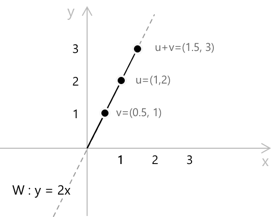

Векторні простори
Означення
Векторний простір — це алгебраїчна структура, яка формалізує ідею величин, що можуть бути масштабовані та комбіновані лінійно. Це поняття виникає всюди, де зустрічаються об'єкти, які можна додавати один до одного та множити на числа узгодженим чином: геометричні стрілки на площині, поліноми з дійсними коефіцієнтами, послідовності дійсних чисел та неперервні функції на проміжку — всі вони мають цю спільну ознаку.
На відміну від групи або кільця, які визначені на одній множині, векторний простір залучає дві різні множини: поле \(F\), елементи якого називаються скалярами, та множину \(V\), елементи якої називаються векторами. Векторний простір над \(F\) — це множина \(V\) разом із двома операціями: додаванням векторів \(+ : V \times V \to V\) та множенням скаляра на вектор \(\cdot : F \times V \to V\), що задовольняють наступні аксіоми:
- \((V, +)\) є абелевою групою. Зокрема, існує нульовий вектор \(\mathbf{0} \in V\) такий, що \(\mathbf{v} + \mathbf{0} = \mathbf{v}\) для всіх \(\mathbf{v} \in V\), і кожен вектор \(\mathbf{v}\) має протилежний за знаком вектор \(-\mathbf{v}\).
- Сумісність із множенням у полі: для всіх \(\alpha, \beta \in F\) та \(\mathbf{v} \in V\) маємо \(\alpha \cdot (\beta \cdot \mathbf{v}) = (\alpha\beta) \cdot \mathbf{v}\).
- Нейтральний елемент множення скаляра: для всіх \(\mathbf{v} \in V\) мультиплікативна одиниця \(1 \in F\) задовольняє \(\mathbf{1} \cdot \mathbf{v} = \mathbf{v}\).
- Дистрибутивність множення скаляра відносно додавання векторів: для всіх \(\alpha \in F\) та \(\mathbf{u}, \mathbf{v} \in V\) маємо \(\alpha \cdot (\mathbf{u} + \mathbf{v}) = \alpha \cdot \mathbf{u} + \alpha \cdot \mathbf{v}\).
- Дистрибутивність множення скаляра відносно додавання в полі: для всіх \(\alpha, \beta \in F\) та \(\mathbf{v} \in V\) маємо \((\alpha + \beta) \cdot \mathbf{v} = \alpha \cdot \mathbf{v} + \beta \cdot \mathbf{v}\).
Поле \(F\), над яким визначено \(V\), називається полем скалярів \(V\). У більшості застосувань на рівні бакалавра \(F\) є або \(\mathbb{R}\), або \(\mathbb{C}\), і відповідно говорять про дійсний векторний простір або комплексний векторний простір.
Властивості
Кілька елементарних наслідків випливають безпосередньо з аксіом. Для будь-якого скаляра \(\alpha \in F\) та будь-якого вектора \(\mathbf{v} \in V\) множення на нуль задовольняє \(\mathbf{0} \cdot \mathbf{v} = \mathbf{0}\). Щоб побачити це, запишемо \(0 \cdot \mathbf{v} = (0 + 0) \cdot \mathbf{v} = 0 \cdot \mathbf{v} + 0 \cdot \mathbf{v}\) і скоротимо \(0 \cdot \mathbf{v}\) з обох сторін, використовуючи структуру групи \((V, +)\). Аналогічно, для будь-якого \(\mathbf{v} \in V\) маємо \(\alpha \cdot \mathbf{0} = \mathbf{0}\) та \((-1) \cdot \mathbf{v} = -\mathbf{v}\).
Якщо \(\alpha \cdot \mathbf{v} = \mathbf{0}\), то або \(\alpha = 0\), або \(\mathbf{v} = \mathbf{0}\). Це прямий наслідок оберненості ненульових скалярів: якщо \(\alpha \neq 0\), то \(\mathbf{v} = 1 \cdot \mathbf{v} = (\alpha^{-1}\alpha) \cdot \mathbf{v} = \alpha^{-1} \cdot (\alpha \cdot \mathbf{v}) = \alpha^{-1} \cdot \mathbf{0} = \mathbf{0}\). Ця властивість є аналогом відсутності дільників нуля в полі для векторного простору і відіграє центральну роль у теорії лінійної незалежності.
Алгебраїчна ієрархія
Векторні простори займають природне місце на вершині стандартної ієрархії алгебраїчних структур, суттєво залежно від наявності поля скалярів.
Група складається з множини з однією операцією, що допускає обернені елементи. Кільце вводить другу операцію, яка не обов'язково має бути оберненою. Поле вимагає, щоб обидві операції були повністю оберненими для ненульових елементів. Векторний простір бере поле як задане і будує на його основі нову структуру, в якій поле діє на окрему множину векторів шляхом масштабування. Ці три структури утворюють ланцюг зростаючої жорсткості:
- Група має одну операцію з оберненими елементами.
- Кільце має дві операції, причому обернені гарантовані лише для додавання.
- Поле має дві операції, причому обернені гарантовані як для додавання, так і для всіх ненульових елементів при множенні.
Векторний простір сам по собі не є наступним кроком у цьому ланцюгу, а радше структурою, що передбачає існування поля. Кожен векторний простір над \(\mathbb{R}\) або \(\mathbb{C}\) залежить від того, що аксіоми поля діють, щоб його множення скаляра було правильно визначеним.
Приклади
Множина \(\mathbb{R}^n\) всіх впорядкованих \(n\)-ок дійсних чисел є векторним простором над \(\mathbb{R}\) з покомпонентним додаванням та скалярним множенням. Для \(n = 2\) додавання визначається як \((a_1, a_2) + (b_1, b_2) = (a_1 + b_1,\, a_2 + b_2)\), а скалярне множення як \(\alpha \cdot (a_1, a_2) = (\alpha a_1,\, \alpha a_2)\). Нульовим вектором є \((0, 0)\). Це прототип скінченновимірного дійсного векторного простору, і він забезпечує геометричну інтуїцію, що лежить в основі загальної теорії.
Множина \(\mathbb{C}^n\) всіх впорядкованих \(n\)-ок комплексних чисел є векторним простором над \(\mathbb{C}\) з аналогічними операціями. Її також можна розглядати як векторний простір над \(\mathbb{R}\), хоча в цьому випадку її розмірність подвоюється: \(\mathbb{C}^n\) як дійсний векторний простір має розмірність \(2n\).
Множина \(\mathbb{R}[x]_{\leq n}\) всіх поліномів з дійсними коефіцієнтами степеня не більше \(n\) є векторним простором над \(\mathbb{R}\) зі звичайним додаванням поліномів та множенням полінома на дійсну сталу. Нульовим вектором є нульовий поліном. Природним базисом для цього простору є \({1, x, x^2, \ldots, x^n}\), який містить \(n+1\) елемент, отже розмірність цього простору дорівнює \(n+1\).
Множина \(\mathcal{C}([a,b])\) всіх неперервних дійснозначних функцій на замкненому проміжку \([a,b]\) є векторним простором над \(\mathbb{R}\) з поточковим додаванням та скалярним множенням: \((f + g)(x) = f(x) + g(x)\) та \((\alpha f)(x) = \alpha f(x)\). Цей простір є нескінченновимірним, оскільки поліноми всіх степенів утворюють лінійно незалежну підмножину, яка не має скінченної породжуючої множини.
Підпростори
Непорожня підмножина \(W \subseteq V\) називається підпростором \(V\), якщо \(W\) сама по собі є векторним простором над \(F\) з операціями, що успадковані від \(V\). Замість того щоб перевіряти всі аксіоми окремо, достатньо перевірити дві умови: для всіх \(\mathbf{u}, \mathbf{v} \in W\) та всіх \(\alpha \in F\) необхідно, щоб \(\mathbf{u} + \mathbf{v} \in W\) та \(\alpha \cdot \mathbf{v} \in W\). Ці дві умови разом називаються замкненістю відносно лінійних комбінацій. Нульовий вектор \(\mathbf{0}\) повинен належати кожному підпростору, оскільки при \(\alpha = 0\) отримаємо \(0 \cdot \mathbf{v} = \mathbf{0} \in W\).
Як приклад, множина \(W = {(x, y) \in \mathbb{R}^2 : y = 2x}\) є підпростором \(\mathbb{R}^2\). Для будь-яких двох векторів \((x_1, 2x_1)\) та \((x_2, 2x_2)\) у \(W\), їхня сума \((x_1 + x_2,\, 2x_1 + 2x_2) = (x_1 + x_2,\, 2(x_1+x_2))\) належить \(W\), і для будь-якого скаляра \(\alpha \in \mathbb{R}\) вектор \(\alpha(x_1, 2x_1) = (\alpha x_1,\, 2\alpha x_1)\) також належить \(W\). Обидві умови виконуються, отже \(W\) є підпростором \(\mathbb{R}^2\). Геометрично \(W\) — це пряма, що проходить через початок координат з кутовим коефіцієнтом \(2\).

Діаграма ілюструє дві умови замкненості для підпростору \(W = \{(x, y) \in \mathbb{R}^2 : y = 2x\}\). Будь-який вектор у \(W\) лежить на прямій, що проходить через початок координат з кутовим коефіцієнтом \(2\). Додавання двох таких векторів або множення одного з них на скаляр завжди дає вектор, який залишається на тій самій прямій, що підтверджує замкненість \(W\) відносно обох операцій.
Базис і розмірність
Множина векторів \(\{\mathbf{v}_1, \mathbf{v}_2, \ldots, \mathbf{v}_n\}\) у \(V\) називається лінійно незалежною, якщо єдиним розв'язанням рівняння
\[ \alpha_1 \mathbf{v}_1 + \alpha_2 \mathbf{v}_2 + \cdots + \alpha_n \mathbf{v}_n = \mathbf{0} \]
є \(\alpha_1 = \alpha_2 = \cdots = \alpha_n = 0\). Множина векторів, яка не є лінійно незалежною, називається лінійно залежною, що означає, що принаймні один вектор у множині може бути представлений як лінійна комбінація інших. Базисом \(V\) називається лінійно незалежна множина векторів, яка породжує \(V\), тобто кожен вектор у \(V\) може бути записаний як лінійна комбінація векторів базису. Представлення будь-якого вектора через заданий базис є єдиним. Якщо \[\mathbf{v} = \alpha_1 \mathbf{v}_1 + \cdots + \alpha_n \mathbf{v}_n = \beta_1 \mathbf{v}_1 + \cdots + \beta_n \mathbf{v}_n\]
тоді віднімання дає: \[(\alpha_1 – \beta_1)\mathbf{v}_1 + \cdots + (\alpha_n – \beta_n)\mathbf{v}_n = \mathbf{0}\]
і лінійна незалежність вимагає, щоб \(\alpha_k = \beta_k\) для всіх \(k\).
Одна з фундаментальних теорем лінійної алгебри стверджує, що будь-які два базиси одного і того ж векторного простору містять однакову кількість елементів. Аргумент ґрунтується на зауваженні, що якщо множина з \(m\) векторів породжує \(V\), а множина з \(n\) векторів є лінійно незалежною у \(V\), то обов'язково \(n \leq m\). Застосувавши цю нерівність двічі, в обох напрямках, до будь-яких двох базисів, ми отримаємо, що їхні потужності рівні. Ця спільна потужність називається розмірністю \(V\) і позначається \(\dim V\).
Стандартний базис \(\mathbb{R}^n\) складається з \(n\) векторів \(\mathbf{e}_1, \mathbf{e}_2, \ldots, \mathbf{e}_n\), де \(\mathbf{e}_k\) має \(1\) на \(k\)-ій позиції та \(0\) в усіх інших. Наприклад, у \(\mathbb{R}^3\) стандартний базис має такий вигляд:
\[ \mathbf{e}_1 = (1, 0, 0), \quad \mathbf{e}_2 = (0, 1, 0), \quad \mathbf{e}_3 = (0, 0, 1) \]
Кожен вектор \((a, b, c) \in \mathbb{R}^3\) можна однозначно записати як \(a\,\mathbf{e}_1 + b\,\mathbf{e}_2 + c\,\mathbf{e}_3\), що підтверджує, що ці три вектори утворюють базис і що \(\dim \mathbb{R}^3 = 3\).
Лінійні відображення
Лінійне відображення, або лінійне перетворення, — це функція \(\varphi : V \to W\) між двома векторними просторами над одним і тим самим полем \(F\), яка зберігає структуру векторного простору. Зокрема, \(\varphi\) є лінійним, якщо для всіх \(\mathbf{u}, \mathbf{v} \in V\) та всіх \(\alpha \in F\) виконуються наступні дві умови:
\[\varphi(\mathbf{u} + \mathbf{v}) = \varphi(\mathbf{u}) + \varphi(\mathbf{v})\] \[ \varphi(\alpha \cdot \mathbf{v}) = \alpha \cdot \varphi(\mathbf{v})\]
Ці дві умови можна об'єднати в одну вимогу: \(\varphi(\alpha \mathbf{u} + \beta \mathbf{v}) = \alpha\varphi(\mathbf{u}) + \beta\varphi(\mathbf{v})\) для всіх \(\alpha, \beta \in F\) та \(\mathbf{u}, \mathbf{v} \in V\). Лінійне відображення, яке є бієктивним, називається лінійним ізоморфізмом, а два векторні простори називаються ізоморфними, якщо між ними існує лінійний ізоморфізм. Фундаментальний результат стверджує, що кожен \(n\)-вимірний векторний простір над \(F\) ізоморфний \(F^n\), тому скінченчновимірні векторні простори повністю класифікуються за їхньою розмірністю та їхнім скалярним полем.
Ядро та образ лінійного відображення \(\varphi : V \to W\) визначаються наступним чином:
\[\ker(\varphi) = \{\mathbf{v} \in V : \varphi(\mathbf{v}) = \mathbf{0}\}\] \[\mathrm{im}(\varphi) = \{\varphi(\mathbf{v}) : \mathbf{v} \in V\}\]
Як \(\ker(\varphi)\), так і \(\mathrm{im}(\varphi)\) є підпросторами \(V\) та \(W\) відповідно. Теорема про розмірність, також відома як теорема про ранг і нульність, стверджує, що для будь-якого лінійного відображення між скінченчновимірними просторами виконується наступна тотожність:
\[ \dim V = \dim \ker(\varphi) + \dim \mathrm{im}(\varphi) \]
Розмірність \(\mathrm{im}(\varphi)\) називається рангом \(\varphi\), а розмірність \(\ker(\varphi)\) — його нульністю. Теорема про ранг і нульність є одним із центральних результатів лінійної алгебри та лежить в основі теорії систем лінійних рівнянь, аналізу матриць та класифікації лінійних відображень між скінченчновимірними просторами.
Приклад
Розглянемо лінійне відображення \(\varphi : \mathbb{R}^3 \to \mathbb{R}^2\), визначене наступним правилом:
\[ \varphi(x, y, z) = (x + y,\; y + z) \]
Щоб перевірити лінійність, необхідно переконатися, що:
\[\varphi(\mathbf{u} + \mathbf{v}) = \varphi(\mathbf{u}) + \varphi(\mathbf{v})\] \[\varphi(\alpha \mathbf{v}) = \alpha \varphi(\mathbf{v})\]
виконуються для всіх векторів і скалярів, що безпосередньо випливає з лінійності додавання та скалярного множення в \(\mathbb{R}^3\). Ядро складається з усіх векторів \((x, y, z)\), що задовольняють рівняння \(x + y = 0\) та \(y + z = 0\), тобто \(x = -y\) та \(z = -y\). Кожен елемент \(\ker(\varphi)\), отже, має вигляд:
\[(-y, y, -y) = y(-1, 1, -1)\]
для деякого \(y \in \mathbb{R}\), тож ядро є одновимірним підпростором, породженим вектором \((-1, 1, -1)\). Образ — це весь \(\mathbb{R}^2\), оскільки для будь-якого \((a, b) \in \mathbb{R}^2\) вектор \((a, 0, b)\) задовольняє умову \(\varphi(a, 0, b) = (a, b)\), що показує, що \(\varphi\) є сюр'єктивним і, таким чином, \(\dim \mathrm{im}(\varphi) = 2\). Теорема про ранг і нульність підтверджується:
\[ \dim \mathbb{R}^3 = \dim \ker(\varphi) + \dim \mathrm{im}(\varphi) = 1 + 2 = 3 \]
Розв'язанням цього прикладу є те, що \(\ker(\varphi)\) — це пряма, що проходить через початок координат у напрямку \((-1, 1, -1)\), а \(\mathrm{im}(\varphi) = \mathbb{R}^2\).